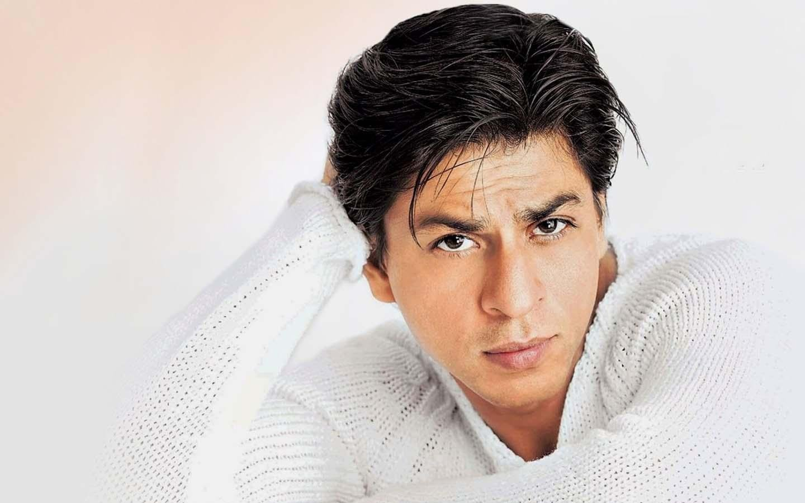

born 2 November 1965), also known by the initialism SRK, is an Indian actor and film producer who works in Hindi cinema. Referred to in the media as the "Baadshah of Bollywood" and "King Khan",[a] he has appeared in more than 100 films, and earned numerous accolades, including 14 Filmfare Awards. born 2 November 1965), also known by the initialism SRK, is an Indian actor and film producer who works in Hindi cinema. Referred to in the media as the "Baadshah of Bollywood" and "King Khan",[a] he has appeared in more than 100 films, and earned numerous accolades, including 14 Filmfare Awards.
| Award | Year | Category | Nominated work | Result |
|---|---|---|---|---|
| Asian Film Award | 2007 | Best Actor | Don | Nominated |
| Bolly word movie Award | 2003 | Best Actor | Devdas | Won |
| Film Fare Award | 2005 | Best Actor | Swades | won |